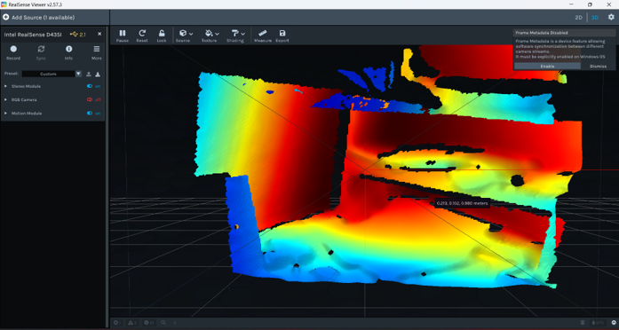
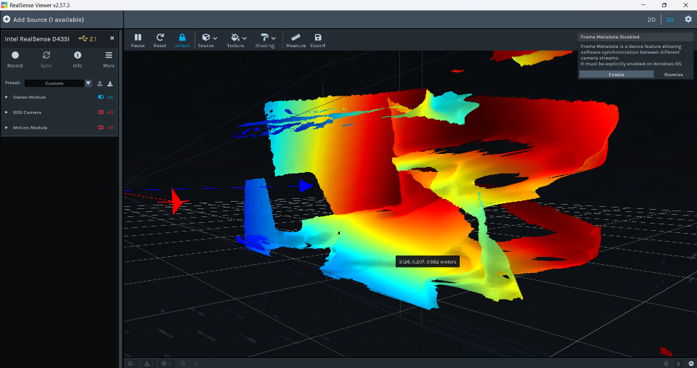
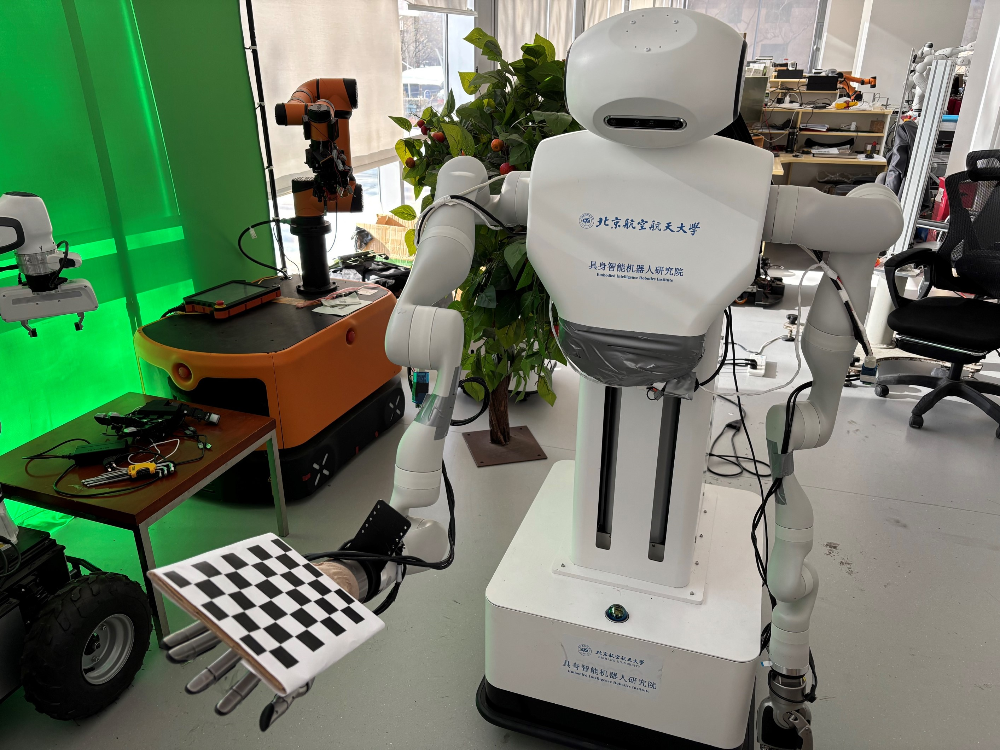
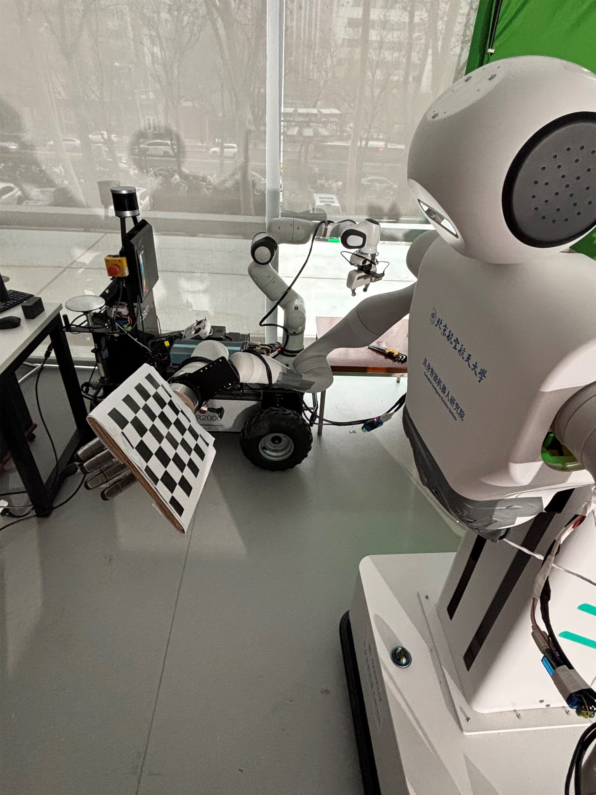

药房自动化项目：使用 Kinova 机械臂 + Intel D455 深度相机， 实现药板的视觉识别、三维定位与自动拾放。
在医院药房与零售药店，药品拆零作业仍高度依赖人工操作。 药师需根据处方将大包装药品拆分为"片"或"粒"分发给患者， 流程繁琐耗时、人力资源浪费严重。 药品包装规格多样、药片易碎等特点使传统工业机器人难以直接适用。
本学期目标：将药板从一个位置拾起，放置到指定黑框中。
粘取工具特殊化设计与 3D 打印、编写舵机控制代码（PCA9685 驱动 MG995/SG90）、 网络连接与 ROS2 功能包构建。
放置框识别、深度相机三维定位、手眼标定与实机验证。
设计操作流程、编写 Kinova Gen3 机械臂运动规划与执行代码， 实现行为树驱动的原子动作序列。
训练 YOLOv8 模型识别药板（数据采集→增强→GPU训练→实机部署）， 完成四部分的整合与精度微调。
系统采用ROS2 + MoveIt 2 框架，由四个核心节点构成 "状态 → 决策 → 执行"递进式控制流水线：
| 层级 | 节点 | 职责 |
|---|---|---|
| 感知层 | 视觉通信节点 | 异步接收 A/B 点数据，以 PoseStamped 格式转发至全局话题，保证最低延迟 |
| 识别节点（本人） | 深度相机 + OpenCV 识别放置框，输出目标三维位姿 | |
| 决策层 | 任务调度节点 | 服务化管理各节点启动，A/B 点数据齐备且空闲时触发任务规划 |
| 执行层 | 运动控制节点 | 行为树驱动：安全抬升 → 抓取 → 转运 → 空中调姿 → 放置 → 复位，异常自动回退 |
这是我负责的核心模块之一。目标是从深度相机画面中稳定、准确地识别出黑色放置框的位置和姿态。
考虑到机械臂运动过程中可能遮挡摄像头或环境光照变化导致偶发性误识别， 引入了帧间一致性滤波：
该机制有效抑制了遮挡和光照波动对机械臂运动规划的干扰。
放置框识别实机演示：稳定检测 + 帧间一致性滤波
这是我负责的核心模块之二。将二维识别结果映射到三维空间，为机械臂提供精确的抓取/放置坐标。
安装 librealsense2 SDK，调用相机 API 获取 RGB 与深度数据流。 安装 realsense-ros 驱动，将相机数据以 ROS2 话题形式发布。
接收 /camera/color/image_raw（RGB）、
/camera/depth/image_rect_raw（深度）、
/camera/color/camera_info（内参），
通过深度图查询识别框中心点的三维坐标。


这是我负责的核心模块之三。将相机坐标系下的物体位姿转换到机器人基坐标系，是实现视觉引导抓取的关键桥梁。
| 优化项 | 方法 | 效果 |
|---|---|---|
| 亚像素角点优化 | 对标定板角点进行亚像素级精炼 (cornerSubPix) | 识别精度从像素级提升至亚像素级 |
| 有效性审查 | 对每次识别的数据检查重投影误差，偏差过大则舍去 | 过滤因运动模糊等因素导致的劣质采样 |
| 重复性审查 | 与已录入数据比较相似度，高度重合的数据去重 | 保证标定数据的多样性与独立性 |
| 双姿态表示 | 同时输出欧拉角与四元数两种姿态表示 | 兼容机械臂控制程序的不同接口需求 |

手眼标定实机操作过程

Kinova Gen3 机械臂 + 粘取工具 + D455 深度相机
目标物在机器人基坐标系下的位姿 = baseTcam × 目标物在相机坐标系下的位姿
其中 baseTcam（手眼矩阵）通过 Tsai / Park 方法求解， 建立起相机 → 机械臂基座的坐标映射关系。 标定完成后，识别节点输出直接以 PoseStamped 发送至运动规划节点，无需任何中间转换。
完成从视觉识别到机械臂运动的完整闭环：
| 阶段 | 工作内容 |
|---|---|
| 硬件准备 | 制作 25mm×25mm、5×8 棋盘格标定板并安装至机械臂末端 |
| 软件编写 | 连接主机 → 启动 D455 相机 → 编写并运行机械臂位姿读取与发布程序 |
| 数据对齐 | 根据运动规划节点的话题名称、消息格式、单位和接收频率， 调整识别节点的输出，保证数据格式一致 |
| 高度补偿 | 根据粘取工具的实际安装高度，对 Z 轴坐标进行精细补偿， 精度精确到小数点后三位 |
| 坐标变换 | 通过手眼标定矩阵，将药板和黑框相对于相机的位姿 转化为机器人基坐标系下的位姿 |
最终实现了从"视觉识别 → 三维定位 → 手眼标定变换 → 机械臂运动执行"的完整闭环。
从识别到抓取放置的完整流程演示：